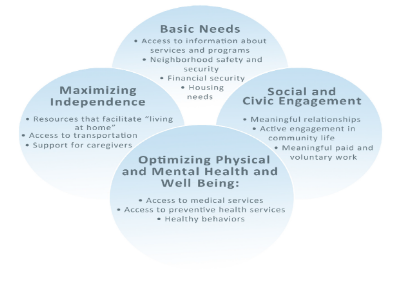
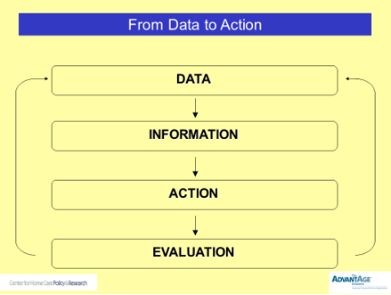

The AdvantAge Initiative Framework:
Four Domains of an Aging-Friendly Community
Framework
Early in the project, the AdvantAge Initiative conducted focus groups with older adults in various parts of the country. Focus group participants were encouraged to critique their own communities and describe the ideal community for aging in place. Regardless of where participants lived, their responses were similar. People said they wished to remain active and engaged in community life. To them that meant maintaining independence, avoiding isolation, and not becoming a burden to others.
Focus group responses were then synthesized into a framework that defines the components of an aging-friendly community. These components were organized into four broad categories (or domains) that would help us describe and assess how aging friendly a community is. Each of the domains include a number of dimensions that describe the domain in more detail, as indicated below.
The AdvantAge Initiative Framework:
Four Domains of an Aging-Friendly Community

Indicators
Once the framework was established, we developed a set of indicators that can be used to measure how well communities are meeting the needs of older adults within the four domains.
Here are a few sample indicators from each:
Basic Needs
- Percentage of householders age 65+ with home modification needs
- Percentage of people age 65+ who feel safe/unsafe in their neighborhood
- Percentage of people age 65+ who know whom to call if they need information about available services in the community
Social and Civic Engagement
- Percentage of people age 65+ who engaged in at least one social, religious, or cultural activity in the past week
- Percentage of people age 65+ who voted in local elections
- Percentage of people age 65+ who participate in volunteer work
Optimizing Physical and Mental Health and Well Being
- Rates of screening and vaccination for various conditions among people 65+
- Percentage of people 65+ who report being in excellent, good, fair, or poor physical and mental health
- Percentage of people 65+ who had problems paying for medical care
Maximizing Independence
- Percentage of people age 65+ who have access to public transportation
- Percentage of people age 65+ with adequate assistance in activities of daily living
- Percentage of people age 65+ who are caregivers
Survey
At the heart of the AdvantAge Initiative is a comprehensive survey of community-residing older adults. Consumer-derived information is important because it:
- Complements the “top-down” perspectives of institutions and professions
- May challenge organizational and individual assumptions about aging and older adults
- Enables stakeholders to “hear” a variety of community voices; engages citizens in dialogue about aging issues; and builds support for action plans
There is a standard AdvantAge survey questionnaire, but most organizations prefer to customize it to ensure that the included questions will yield the kind of information that they are looking for. The AdvantAge Initiative staff works closely with clients to customize the survey for their specific needs. The survey can be conducted by telephone or online and on paper.
The survey findings help stakeholders identify community assets and opportunities for action, set priorities, and develop responses to identified aging issues.
Telephone survey: Telephone surveys are conducted by a national survey research company that has worked with the AdvantAge Initiative team for many years. This type of survey is the most scientific: The survey research company uses a list-assisted, randomized methodology to reach a target number of older adults, determined in advance, that reflects the demographic characteristics of the community.
Online survey: The online survey is perhaps the most efficient because respondents can fill it out anytime it’s convenient for them, and it is fast because respondents are automatically skipped out of questions that do not pertain to them. Of course taking the survey online means that potential respondents need to have access to a computer and an internet connection. The AdvantAge Initiative survey questionnaire includes questions about computer use, and findings from recent surveys indicate that in many cases more older adults than expected use computers; in these surveys, computer use by older adults has ranged anywhere from 40% to more than 60%.
Paper survey: The AdvantAge Initiative team also provides paper survey questionnaires for people who do not have the option to take the survey online. The completed survey questionnaires are then keyed into a database with the online survey responses.
The online/paper survey is conducted with a “convenience sample” made up of community members who are selected because of their convenient accessibility and proximity to the person/people who are conducting the survey. There is usually a considerable cost differential between conducting a randomized survey by telephone and an online/paper survey.

Data→Information→Action
The AdvantAge Initiative survey provides a “data snapshot” of how well seniors are faring in their communities. Local groups then use these survey data to help build broader awareness about aging, inform planning efforts and service provision, and spur needed community-wide action in the not-for-profit, public, and private sectors.
The data are expressed as percentages, as shown by the sample indicators in the “Indicators” section. But data are only numbers until they are turned into “information.” Data become information when community stakeholders get together to interpret the numbers and apply their own knowledge, experiences, and perceptions to a discussion about the data. This is how meaning is made; without this interaction the data remain simply numbers.
The ultimate purpose of the AdvantAge Initiative is to use the consumer-derived information to help community stakeholders develop and implement an agenda (“Action”) to make the community a better place to live for older adults and their families.